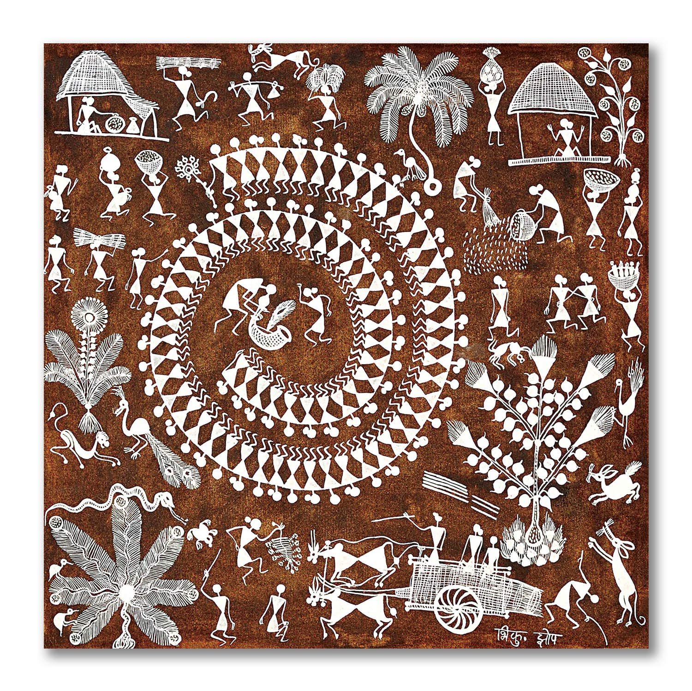
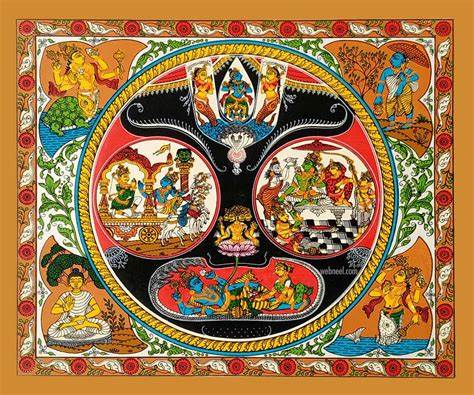
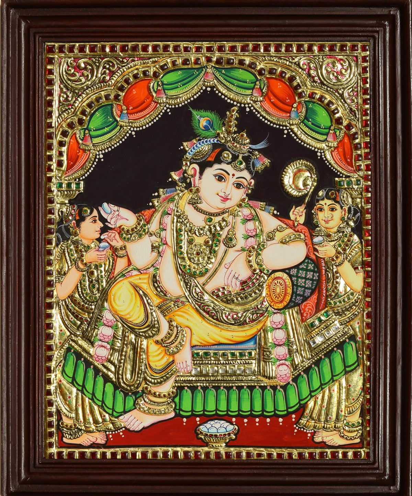
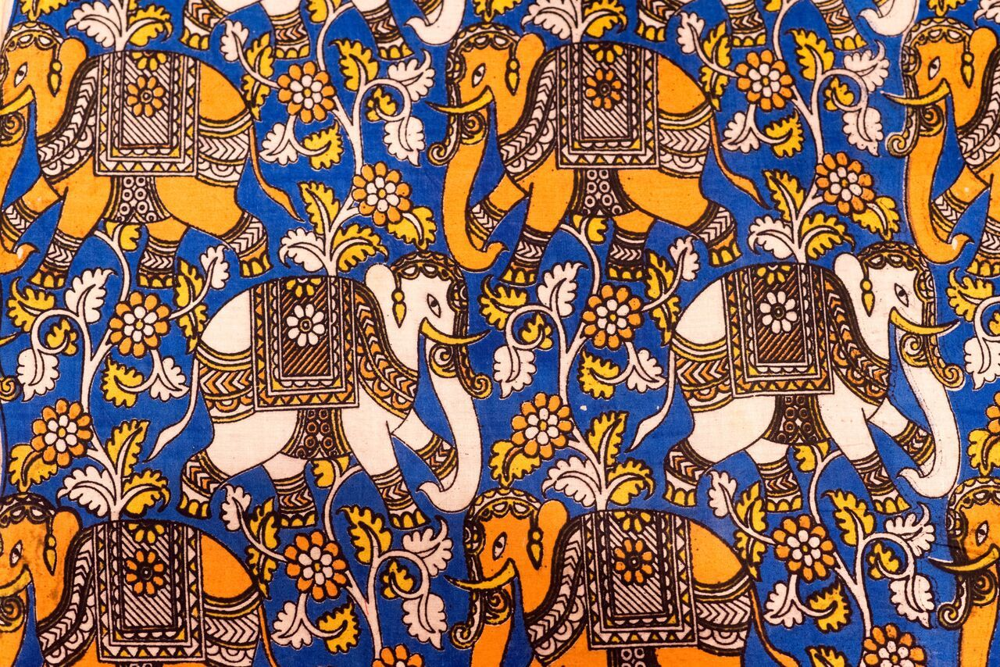

Welcome to Folk Art Forms in India
Art Styles and Techniques
Madhubani
Madhubani art, originating from Bihar, India, boasts a rich history intertwined with the cultural heritage of the region. Also known as Mithila painting, it finds its roots in the folk traditions of the Maithili-speaking community. This art form can be traced back to ancient times, with references found in Hindu epics like the Ramayana. Traditionally practiced by women, Madhubani art adorned the walls of homes during festivals, weddings, and other auspicious occasions. It served not only as a form of decoration but also as a medium for storytelling, depicting religious motifs, mythological tales, and scenes from daily life. Characterized by intricate patterns, vibrant colors derived from natural sources like flowers and leaves, and geometric shapes, Madhubani paintings often feature themes of fertility, love, and devotion.

Warli
Warli art, originating from the Warli tribe of Maharashtra, India, is one of the oldest forms of tribal art in the country, dating back to over 2,000 years. The paintings, traditionally done on mud walls using white rice paste, cow dung, and natural pigments, offer a glimpse into the tribal life of the Warli community. Warli art is characterized by its simplicity, employing basic geometric shapes such as circles, triangles, and lines to depict scenes from daily life, rituals, and celebrations. The art form is deeply rooted in the tribe's spiritual beliefs and customs, with motifs representing nature, animals, humans, and the divine. It often features repetitive patterns symbolizing unity, continuity, and the cyclical nature of life.
Gond
Gond art, originating from the Gond tribe of Madhya Pradesh, India, is a vibrant and visually captivating form of tribal art deeply connected to the cultural identity and beliefs of the community. With roots stretching back several centuries, Gond art is believed to have originated as a form of ritual art, withdesigns adorning the walls of homes during festivals and ceremonies. Today, Gond art has evolved into a celebrated form of contemporary folk art, known for its intricate detailing, vibrant colors, and intricate patterns. The art form predominantly features flora, fauna, and mythological tales, depicted using intricate dot and line work. Each Gond painting tells a story, often inspired by nature, tribal folklore, and spiritual beliefs, capturing the essence of the Gond way of life.

Pattachitra
Pattachitra, a traditional art form originating from Odisha and West Bengal, India, holds a significant place in the cultural heritage of the region. The word 'Pattachitra' is derived from the Sanskrit words 'patta,' meaning cloth, and 'chitra,' meaning picture. Pattachitra paintings are intricate scroll paintings executed on cloth or dried palm leaves, featuring mythological narratives, religious themes, and folk tales. These paintings are characterized by their vibrant colors, intricate detailing, and precision in execution. Pattachitra artists employ natural materials such as vegetable dyes and lampblack for creating the vivid hues seen in their artwork. The process of creating a Pattachitra painting is meticulous, involving several stages of preparation, including treating the canvas, sketching the design, and applying layers of color. The final masterpiece often showcases elaborate compositions, rich symbolism, and a harmonious blend of tradition and artistic expression.
Tanjore
Tanjore painting, originating from Tamil Nadu, India, is a classical South Indian art form renowned for its rich heritage, intricate craftsmanship, and divine aesthetics. With origins dating back to the 16th century during the reign of the Nayakas of Thanjavur, Tanjore painting flourished under the patronage of the Maratha rulers of Thanjavur. It is characterized by its use of rich colors, surface richness, and compact composition, often featuring Hindu gods, goddesses, and saints adorned with gold foil and precious stones. Tanjore paintings typically depict divine beings in majestic poses, surrounded by ornate architectural elements and intricate floral motifs. The process of creating a Tanjore painting is highly intricate and labor-intensive, involving several stages of preparation, including the application of a base coat of chalk powder mixed with adhesive, followed by the application of gold foil and finally, the painting of intricate details using natural dyes and pigments.
Kalamkari
Kalamkari, an ancient art form originating from Andhra Pradesh and Telangana, India, is renowned for its intricate hand-painted or block-printed cotton fabrics depicting mythological tales, floral motifs, and intricate patterns. The word 'Kalamkari' is derived from the Persian words 'kalam,' meaning pen, and 'kari,' meaning craftsmanship, reflecting the meticulous skill involved in creating these artworks. Kalamkari artists utilize natural dyes extracted from plants, roots, and minerals to achieve a wide spectrum of colors, ranging from earthy tones to vibrant hues. The process of creating a Kalamkari artwork is highly labor-intensive, involving several stages of dyeing, washing, and intricate hand-painting or block-printing techniques. The result is a masterpiece of textile artistry, characterized by its intricate designs, rich colors, and timeless elegance.
Maps
Madhubani, Bihar - Madhubani Art
Thane, Maharashtra - Warli Art
Balaghat, Madhya Pradesh - Gond Art
Puri, Odisha - Pattachitra Art
Thanjavur, Tamil Nadu - Tanjore Art
Srikalahasti, Andhra Pradesh - Kalamkari Art